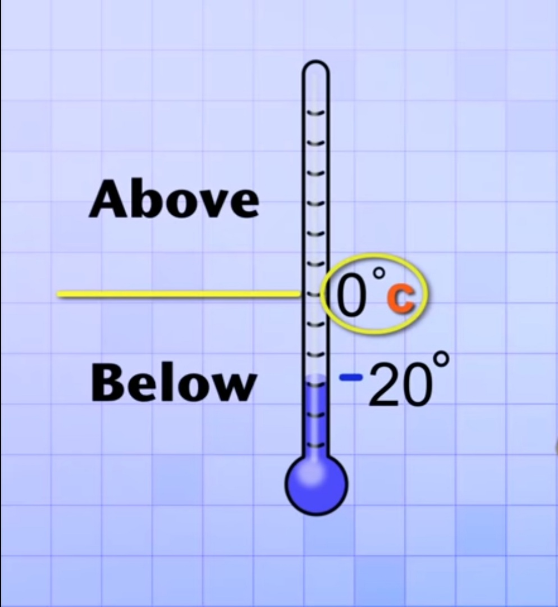
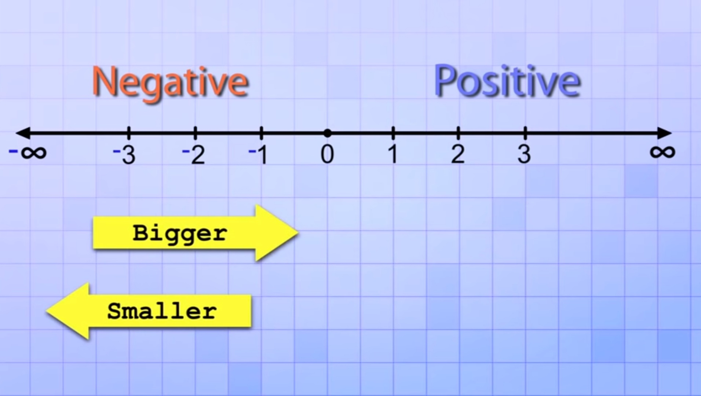

We have already understand from our previous blog post "ABCD of the maths" that counting through painting in cave was not enough similarly counting through stones was also not enough similarly Roman numbers were also hard and we settled with our current place value number system i.e 1,2,3....
But it too has some demerits and some cases are not covered by our current system, like:
We are living on a plain alongside sea level and we mark our surface altitude as 0 meters and a mountain in front of us as of some meters but if I ask altitude some fall or a deep well or sunk mountain in water then we don't have an answer for that.
Similarly, temperature, think as you are the first guy who made the first thermometer in summer and you scaled it from 0 to 100 and your current temperature was 15 and then gradually winter arrived and one day suddenly the temperature dropped below to 35 then what will be your current temperature 15 - 35?
This one you might find relatable, like in one exam you didn't study and in the exam you caught cheated so your examiner penalized your marks that whatever marks you scored will be deducted by 25 and unfortunately you scored 21, so what will be your total marks?
So these cases created the necessity to have numbers that can go lower than zero and also infinite and repeating like 0,1,2.....9,10,11 but below zero, so some smart people at that time instead of coming up with more characters like 0 to 9, came up with small micro character - which can be used alongside with original number to represent number below 0.
